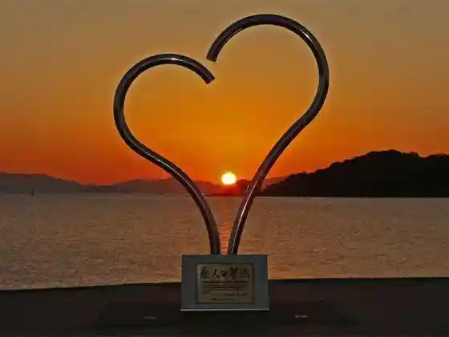
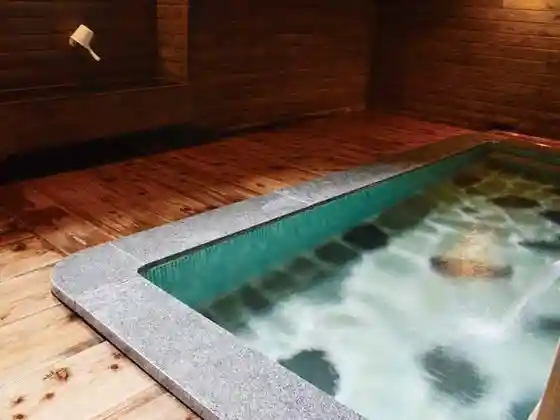
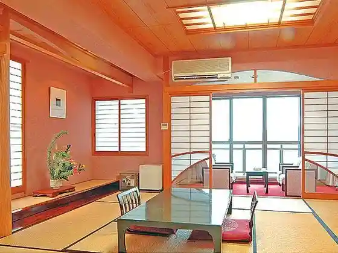
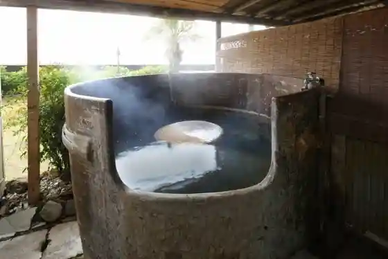

Eko Park Minamata
Minamata, Kumamoto · 0966-62-7501 · Official / source link

Yu no Ji Onsen
Minamata, Kumamoto · 0966-63-2079 · Official / source link
Yu no Tsuru Onsen
Minamata, Kumamoto · 0966-63-2079 · Official / source link

Noboru Yo Kan
Minamata, Kumamoto · 0966-63-4121 · Official / source link

Heiya Ya
Minamata, Kumamoto · 0966-63-2161 · Official / source link

Yu no Ji Umi to Yu Yake
Minamata, Kumamoto · 0966-62-6262 · Official / source link
Roadside Station Minamata
Minamata, Kumamoto · 0966-62-2003 · Official / source link
Sakurano Sono
Minamata, Kumamoto · 0966-67-1715 · Official / source link
Ten no Seicha Sono
Minamata, Kumamoto · 0966-69-0918 · Official / source link
Minamata Oganikkumagatto Mojoka Do
Minamata, Kumamoto · 0966-83-5004 · Official / source link
Yu no Ji Cherii Line
Minamata, Kumamoto · 0966-63-2079 · Official / source link
Chikurin Sono
Minamata, Kumamoto · 0966-62-7501 · Official / source link
Minamata Ritsu Soho Memorial Museum
Minamata, Kumamoto · 0966-61-1639 · Official / source link
Kumamotoken Kankyo Center
Minamata, Kumamoto · 0966-62-2000 · Official / source link
Minamata Ritsu Minamata Byo Museum
Minamata, Kumamoto · 0966-62-2621 · Official / source link
Tokutomi Soho Roka Seika
Minamata, Kumamoto · 0966-61-1639 · Official / source link
Tachiuo Tsuri
Minamata, Kumamoto · 0966-62-4210 · Official / source link
Yu no Ji Fisshingu Park
Minamata, Kumamoto · 0966-63-3870 · Official / source link
Kame Mine Toge (Kireitoge)
Minamata, Kumamoto · Official / source link
Yahazu Gaku
Minamata, Kumamoto · 0966-61-1629 · Official / source link
Yu Shutsu Shichi Taki
Minamata, Kumamoto · 0966-61-1629 · Official / source link
Samukawa Suigen
Minamata, Kumamoto · 0966-69-0776 · Official / source link
Yu no Kojima Park
Minamata, Kumamoto · 0966-61-1629 · Official / source link
Minamata Memorial
Minamata, Kumamoto · 0966-62-2621 · Official / source link
Yu no Ji Beach
Minamata, Kumamoto · 0966-63-2079 · Official / source link
Nippon'ichi Cho I Undojo
Minamata, Kumamoto · Official / source link
Yu no Tsuru Onsengai
Minamata, Kumamoto · 0966-61-1629 · Official / source link
Yuyado Tsurumizu So
Minamata, Kumamoto · 0966-68-0033 · Official / source link
Onsen Iwasaki
Minamata, Kumamoto · 0966-62-3354 · Official / source link
Yu no Tsuru Onsen Hoken Center Hotaru Baths
Minamata, Kumamoto · 0966-68-0811 · Official / source link
Yu no Tsuru Onsen Asahi So
Minamata, Kumamoto · 0966-68-0111 · Official / source link
Yanagi Ya Honpo
Minamata, Kumamoto · 0966-63-2239 · Official / source link
Nakao Yama Park
Minamata, Kumamoto · 0966-61-1618 · Official / source link
O Cha no Sakaguchi Sono
Minamata, Kumamoto · 0966-68-0620 · Official / source link
Nagisa no Koban HIMETATSU (Himetatsu)
Minamata, Kumamoto · 0966-83-8120 · Official / source link